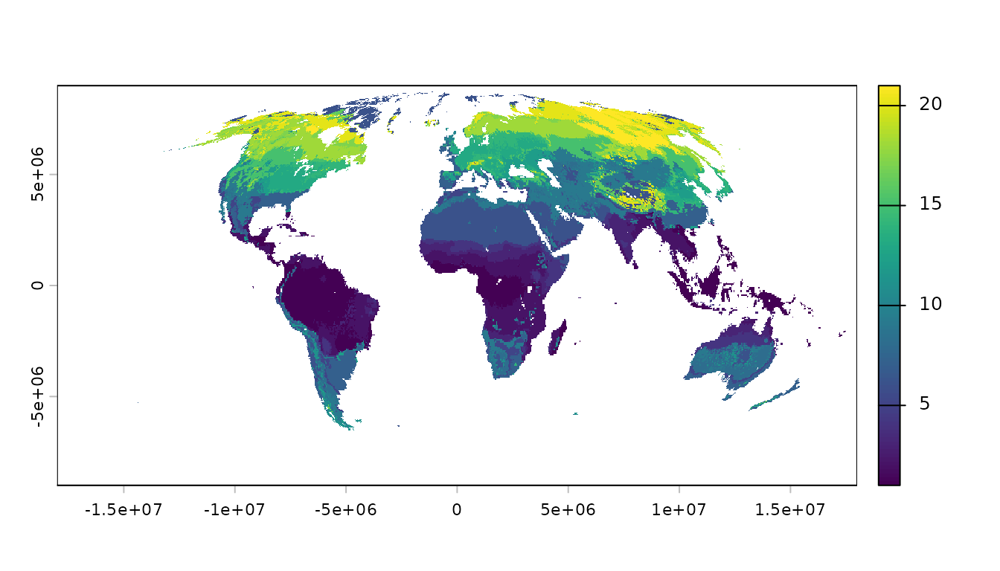
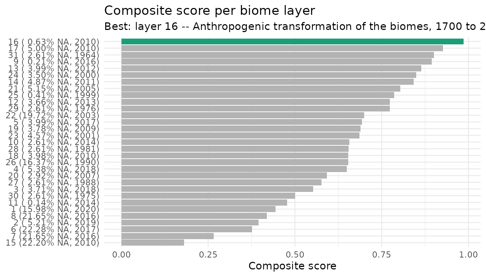
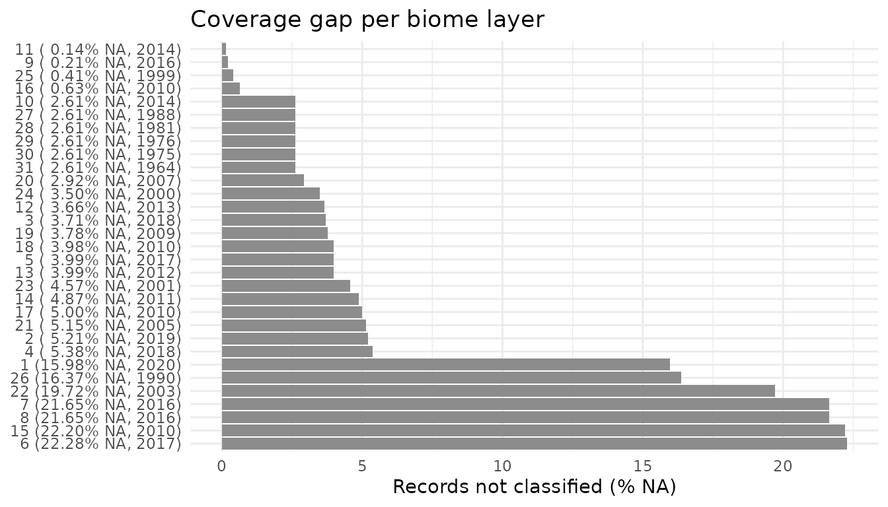
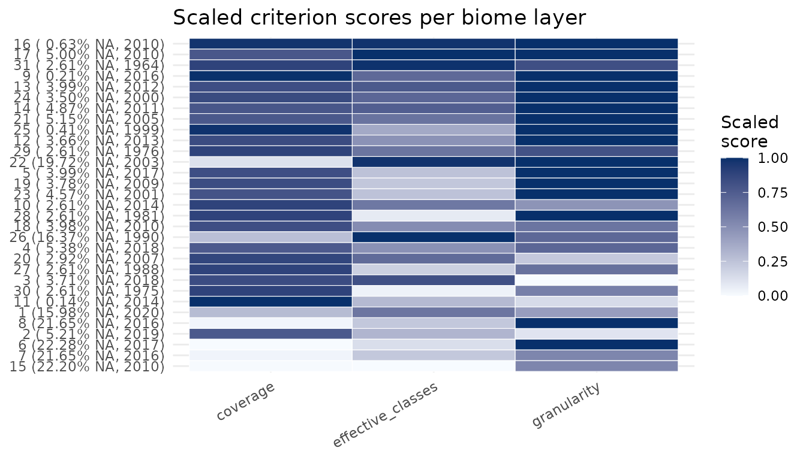

1. Biome layers and occurrence data
biome-data.RmdGoal
This is the first of three vignettes that walk through the
biomes package:
- Biome layers and occurrence data (this vignette) — the raw material: load the biome layers, read their metadata, get an occurrence dataset, and decide which biome definition fits your data best.
- Classify, summarize and map — assign occurrences to biomes, tabulate them, and draw a map.
-
The one-call workflow — do all
of the above in a single
biomes_full()call.
Here we cover everything you need before classifying: the 31 biome layers, their metadata, where occurrences come from, and the ranking that suggests the most informative layer for a dataset.
1. The 31 biome layers
biomes_get() returns the packaged raster stack: 31 biome
definitions (Fischer et al. 2022) at 10 × 10 km resolution,
globally.
layers <- biomes_get()
layers
#> class : SpatRaster
#> size : 1800, 3600, 31 (nrow, ncol, nlyr)
#> resolution : 10000, 10000 (x, y)
#> extent : -1.8e+07, 1.8e+07, -9000000, 9000000 (xmin, xmax, ymin, ymax)
#> coord. ref. : +proj=moll +lon_0=0 +x_0=0 +y_0=0 +ellps=WGS84 +units=m +no_defs
#> source : Biomes_Inventory_RasterStack.tif
#> names : Biome~er_01, Biome~er_02, Biome~er_03, Biome~er_04, Biome~er_05, Biome~er_06, ...
#> min values : 1, 1, 1, 1, 1, 1, ...
#> max values : 21, 98, 30, 20, 15, 14, ...It is an ordinary terra::SpatRaster, so you can subset
and plot single layers directly (biomes attaches
terra for you):
layers[[1]]
#> class : SpatRaster
#> size : 1800, 3600, 1 (nrow, ncol, nlyr)
#> resolution : 10000, 10000 (x, y)
#> extent : -1.8e+07, 1.8e+07, -9000000, 9000000 (xmin, xmax, ymin, ymax)
#> coord. ref. : +proj=moll +lon_0=0 +x_0=0 +y_0=0 +ellps=WGS84 +units=m +no_defs
#> source : Biomes_Inventory_RasterStack.tif
#> name : Biome_Inventory_layer_01
#> min value : 1
#> max value : 21
plot(layers[[1]])
2. Layer metadata
Each layer of the stack matches one row of
biomes_information, in the same order. Use it to find out
which publication and classification a layer comes from:
data(biomes_information)
biomes_information[1, c("publication", "name_of_classification",
"layer_in_raster_stack")]
#> # A tibble: 1 × 3
#> publication name_of_classification layer_in_raster_stack
#> <chr> <chr> <dbl>
#> 1 Allen et al., 2020 Global vegetation patterns of the pa… 1biomes_info() prints a human-readable summary for one,
several, or all layers:
biomes_info(1)
#>
#> Name: Global vegetation patterns of the past 140,000 years (Allen et al., 2020)
#>
#> Layer in raster stack: 1
#>
#> Criteria: Carbon mass, LAI, and plant functional types
#>
#> Methodology: Modelling with the global dynamic vegetation Lund-Potsdam-Jena General Ecosystem Simulator
#>
#> Description: Global biomes were simulated over the past 140,000 years. Input factors to the dynamic global vegetation model included reconstructed atmospheric CO2 concentrations, Earth's obliquity and paleo- as well as pre-industrial climate simulations by HadCM3. Biomes were assigned according to specified ranges of vegetation carbon mass and leaf area index (LAI) of functional plant types based on consistent rules.
#>
#> Number of biomes: 21 (21/0)
#>
#> Biome classes (raster value: name):
#> 1: Tropical evergreen forest
#> 2: Tropical raingreen forest
#> 3: Savanna
#> 4: Tropical grassland
#> 5: Warm temperate woodland
#> 6: Desert
#> 7: Temperate broadleaf evergreen forest
#> 8: Semidesert
#> 9: Temperate shrubland
#> 10: Temperate needleleaf evergreen forest
#> 11: Steppe
#> 12: Temperate parkland
#> 13: Temperate summergreen forest
#> 14: Temperate mixed forest
#> 15: Boreal parkland
#> 16: Tundra
#> 17: Boreal summergreen broadleaf forest
#> 18: Boreal evergreen needleleaf forest
#> 19: Boreal summergreen needleleaf forest
#> 20: Shrub tundra
#> 21: Boreal woodland
#>
#> -----
biomes_info(c(1, 14, 21))
#>
#> Name: Global vegetation patterns of the past 140,000 years (Allen et al., 2020)
#>
#> Layer in raster stack: 1
#>
#> Criteria: Carbon mass, LAI, and plant functional types
#>
#> Methodology: Modelling with the global dynamic vegetation Lund-Potsdam-Jena General Ecosystem Simulator
#>
#> Description: Global biomes were simulated over the past 140,000 years. Input factors to the dynamic global vegetation model included reconstructed atmospheric CO2 concentrations, Earth's obliquity and paleo- as well as pre-industrial climate simulations by HadCM3. Biomes were assigned according to specified ranges of vegetation carbon mass and leaf area index (LAI) of functional plant types based on consistent rules.
#>
#> Number of biomes: 21 (21/0)
#>
#> Biome classes (raster value: name):
#> 1: Tropical evergreen forest
#> 2: Tropical raingreen forest
#> 3: Savanna
#> 4: Tropical grassland
#> 5: Warm temperate woodland
#> 6: Desert
#> 7: Temperate broadleaf evergreen forest
#> 8: Semidesert
#> 9: Temperate shrubland
#> 10: Temperate needleleaf evergreen forest
#> 11: Steppe
#> 12: Temperate parkland
#> 13: Temperate summergreen forest
#> 14: Temperate mixed forest
#> 15: Boreal parkland
#> 16: Tundra
#> 17: Boreal summergreen broadleaf forest
#> 18: Boreal evergreen needleleaf forest
#> 19: Boreal summergreen needleleaf forest
#> 20: Shrub tundra
#> 21: Boreal woodland
#>
#> -----
#>
#> Name: Global Land Cover by national mapping organizations (Tateishi et al., 2011; Tateishi et al., 2014; Kobayashi et al., 2017)
#>
#> Layer in raster stack: 14
#>
#> Criteria: Earth's spectral surface reflectance
#>
#> Methodology: Supervised classification of satellite imagery by MODIS based on multiple remote sensing products for reference as well as specific regional maps and expert opinion, individual unsupervised classification for certain classes, validation with stratified random sampling
#>
#> Description: Spectral surface reflectance data derived from sevens bands of MODIS Earth observation data from 2003/2008/2013 was classified by supervised (for 14 classes) and unsupervised approaches (for six classes). Training data originated from several remote sensors including Landsat, MODIS NDVI products, Google Earth and Virtual Earth. Satellite imagery is grouped according to the Land Cover Classification System (LCCS) by the Food and Agriculture Organization of the United Nations (FAO). Copyright information of the original data set: Global Land Cover by National Mapping Organizations: GLCNMO Version 1, Geospatial Information Authority of Japan, Chiba University and Collaborating Organizations.
#>
#> Number of biomes: 19 (18/1)
#>
#> Biome classes (raster value: name):
#> 1: Mangrove
#> 2: Broadleaf evergreen forest
#> 3: Herbaceous with sparse tree/shrub
#> 4: Bare soil - unconsolidated (sand)
#> 5: Paddy field
#> 6: Cropland/other vegetation mosaic
#> 7: Shrub
#> 8: Broadleaf deciduous forest
#> 9: Bare soil - consolidated (gravel and rock)
#> 10: Tree open
#> 11: Wetland
#> 12: Sparse vegetation
#> 13: Cropland
#> 14: Herbaceous
#> 15: Needleleaf evergreen forest
#> 16: Mixed forest
#> 17: Needleleaf deciduous forest
#> 18: Snow and ice
#> 19: Urban
#>
#> -----
#>
#> Name: GLC2000: a new approach to global land cover mapping from Earth observation data (Bartholomé & Belward, 2005)
#>
#> Layer in raster stack: 21
#>
#> Criteria: Top-of-canopy surface reflectance
#>
#> Methodology: Derivation of land cover maps from spectral surface reflectance at four wavelength ranges based on regionally optimized image classification procedure
#>
#> Description: This land cover product is generated from global daily images of the year 2000 from the VEGETATION-1 sensors of the SPOT 4 satellite and other remote sensing instruments. Regionally specific continental maps were harmonized into one consistent global map.
#>
#> Number of biomes: 21 (20/1)
#>
#> Biome classes (raster value: name):
#> 1: Tree cover (regularly flooded fresh water)
#> 2: Tree cover (broadleaf evergreen)
#> 3: Tree cover (regularly flooded saline water)
#> 4: Tree cover (broadleaf deciduous open)
#> 5: Mosaic cropland/tree cover/other natural vegetation
#> 6: Mosaic cropland/shrub/grass
#> 7: Bare soil
#> 8: Herbaceous cover (closed-open)
#> 9: Shrub cover (closed-open deciduous)
#> 10: Cultivated and managed area
#> 11: Tree cover (broadleaf deciduous closed)
#> 12: Shrub cover (closed-open evergreen)
#> 13: Sparse herbaceous/shrub cover
#> 14: Mosaic tree cover/other natural vegetation
#> 15: Regularly flooded shrub/herbaceous cover
#> 16: Tree cover (needleleaf evergreen)
#> 17: Tree cover (mixed leaf type)
#> 18: Tree cover (burnt)
#> 19: Tree cover (needleleaf deciduous)
#> 20: Snow and ice
#> 21: Urban
#>
#> -----The class-level lookup (raster value → biome name, per layer) lives
in biomes_legend. You rarely call it directly —
biomes_classify() and biomes_visualise() use
it internally to label biomes — but it is there if you need it:
data(biomes_legend)
head(biomes_legend)
#> # A tibble: 6 × 41
#> layer source id_1 id_2 id_3 id_4 id_5 id_6 id_7 id_8 id_9 id_10 id_11
#> <int> <chr> <chr> <chr> <chr> <chr> <chr> <chr> <chr> <chr> <chr> <chr> <chr>
#> 1 1 Allen… Trop… Trop… Sava… Trop… Warm… Dese… Temp… Semi… "Tem… Temp… Step…
#> 2 2 Buchh… Clos… Open… Open… Shru… Bare… Cult… Clos… Clos… "Ope… Herb… Open…
#> 3 3 Beck … Af -… Am -… Aw -… Cwc … BSh … Cwb … Cwa … BWh … "Cfa… Csb … Dsa …
#> 4 4 Hengl… Trop… Trop… Trop… Trop… Xero… Warm… Step… Temp… "Des… Temp… Temp…
#> 5 5 Diner… Trop… Mang… Trop… Trop… Floo… Trop… Dese… Mont… "Med… Temp… Temp…
#> 6 6 Zhang… Trop… Trop… Trop… Trop… Temp… Trop… Temp… Temp… "Tem… Sub-… Frig…
#> # ℹ 28 more variables: id_12 <chr>, id_13 <chr>, id_14 <chr>, id_15 <chr>,
#> # id_16 <chr>, id_17 <chr>, id_18 <chr>, id_19 <chr>, id_20 <chr>,
#> # id_21 <chr>, id_22 <chr>, id_23 <chr>, id_24 <chr>, id_25 <chr>,
#> # id_26 <chr>, id_27 <chr>, id_28 <chr>, id_29 <chr>, id_30 <chr>,
#> # id_31 <chr>, id_32 <chr>, id_33 <chr>, id_34 <chr>, id_35 <chr>,
#> # id_36 <chr>, id_37 <chr>, id_38 <chr>, id_39 <chr>3. Occurrence data
Every downstream function works on a table of occurrence records with
a longitude and a latitude column. The package ships a small example
set, biomes_example, so you can try everything without a
download:
data(biomes_example)
nrow(biomes_example)
#> [1] 29104
head(biomes_example)
#> # A tibble: 6 × 5
#> genus species countryCode decimalLongitude decimalLatitude
#> <chr> <chr> <chr> <dbl> <dbl>
#> 1 Felis Felis catus US -74.6 40.6
#> 2 Felis Felis catus US -74.6 40.6
#> 3 Acinonyx Acinonyx jubatus KE 35.5 -1.23
#> 4 Lynx Lynx rufus US -111. 32.3
#> 5 Lynx Lynx rufus US -81.6 38.4
#> 6 Panthera Panthera leo KE 35.4 -1.37Fetching occurrences from GBIF (optional)
If you do not already have a dataset, biomes_occ() can
pull one from GBIF for a taxon (species, genus, family, …) and run basic
coordinate cleaning. It asks GBIF how many records exist and, for up to
100,000, downloads them via occ_search() (no login). This
is a convenience add-on — the rest of the package works on any
occurrence table.
occ <- biomes_occ(taxon = "Fagus sylvatica")The result has the same shape as biomes_example (a
family, genus, species,
countryCode, decimalLongitude,
decimalLatitude table by default), so it drops straight
into the next steps.
4. Which biome definition fits my data?
With 31 schemes to choose from, biomes_rank() scores
them for your occurrences and proposes a single best layer. It
rates each layer on coverage (share of records classified), the
effective number of biome classes, and granularity, then combines these
into a composite score.
r <- biomes_rank(biomes_example, verbose = FALSE)
best_id <- attr(r, "best_layer")
best_id
#> [1] 16
head(r)
#> layer
#> 1 1
#> 2 2
#> 3 3
#> 4 4
#> 5 5
#> 6 6
#> layer_name
#> 1 Global vegetation patterns of the past 140,000 years
#> 2 Dataset of the global component of the Copernicus Land Monitoring Service
#> 3 Present and future Köppen-Geiger climate classification maps at 1-km resolution
#> 4 Global mapping of potential natural vegetation: an assessment of machine learning algorithms for estimating land potential
#> 5 An ecoregion-based approach to protecting half the terrestrial realm
#> 6 A global classification of vegetation based on NDVI, rainfall and temperature
#> year n_total n_hit n_na pct_na coverage_raw coverage_scaled
#> 1 2020 29104 24452 4652 15.98 0.8401594 0.2844065
#> 2 2019 29104 27587 1517 5.21 0.9478766 0.7708301
#> 3 2018 29104 28023 1081 3.71 0.9628573 0.8384794
#> 4 2018 29104 27538 1566 5.38 0.9461930 0.7632273
#> 5 2017 29104 27943 1161 3.99 0.9601086 0.8260667
#> 6 2017 29104 22619 6485 22.28 0.7771784 0.0000000
#> effective_classes_raw effective_classes_scaled granularity_raw
#> 1 10.080182 0.6202006 0.9047619
#> 2 7.637310 0.3138203 0.8500000
#> 3 11.659664 0.8182963 0.8333333
#> 4 9.012508 0.4862950 0.9500000
#> 5 7.159880 0.2539420 1.0000000
#> 6 6.163172 0.1289367 1.0000000
#> granularity_scaled composite_score rank is_best
#> 1 0.4285714 0.4443928 26 FALSE
#> 2 0.1000000 0.3948835 28 FALSE
#> 3 0.0000000 0.5522586 23 FALSE
#> 4 0.7000000 0.6498408 20 FALSE
#> 5 1.0000000 0.6933362 13 FALSE
#> 6 1.0000000 0.3763122 29 FALSEbiomes_show_rank() visualizes the ranking from three
angles:
biomes_show_rank(r, type = "composite") # composite score per layer
biomes_show_rank(r, type = "na") # % unclassified per layer
biomes_show_rank(r, type = "criteria") # heatmap of all criteria
The integer in attr(r, "best_layer") is exactly the
layer index you pass to the classification and mapping
functions in the next vignette.
Next
You now have (a) the biome layers and their metadata, (b) an occurrence dataset, and (c) a recommended layer. Continue with Classify, summarize and map to turn this into a biome table and a map.